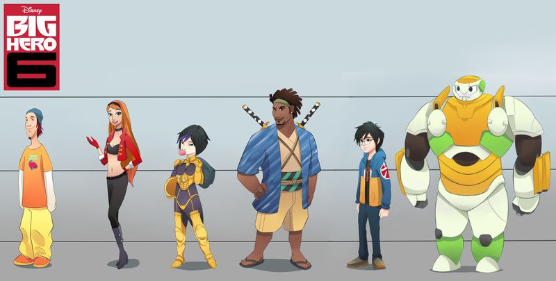

A Japanese manga adaptation of Big Hero 6 (which is titled Baymax (ベイマックス, Beimakkusu) in Japan), illustrated by Haruki Ueno, began serialization in Kodansha's Magazine Special from August 20, 2014. A prologue chapter was published in Weekly Shōnen Magazine on August 6, 2014.[177] According to the film's official Japanese website, the manga revealed plot details in Japan before anywhere else in the world.[178] The website also quoted the film's co-director Don Hall, to whom it referred as a manga fan, as saying that the film was Japanese-inspired.[178] Yen Press published the series in English.[179]
It was announced that IDW Publishing would adapt the Disney version of Big Hero 6 into an ongoing comic. This marked one of the few times where Marvel Comics loaned out one of its properties to another comic publishing company.[180] The series was intended to debut in July 2018 with Hannah Blumenreich writing and Nicoletta Baldari doing the art.[181] The release of the first issue was later pushed to September 19, 2018,[182] before getting pushed back to April 2019 and now titled after the television series.[183]
A manhwa adaptation of several episodes of Big Hero 6: The Series was released in August 2021. Published by Yen Press, the series is written by JuYoun Lee and illustrated by Hong Gyun An.[184]